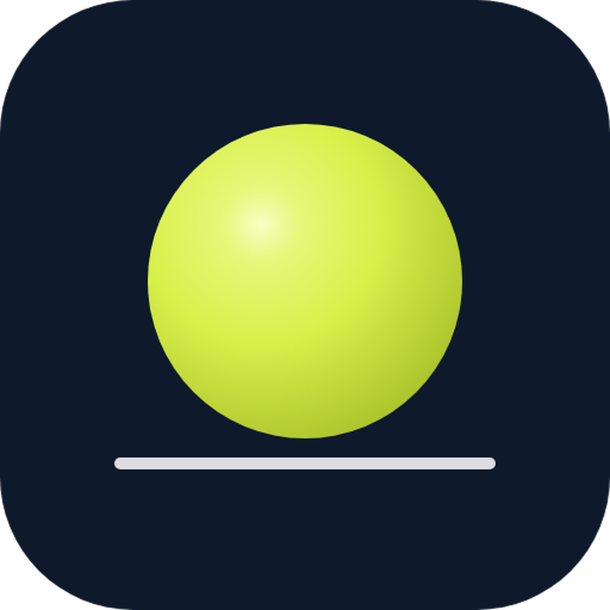
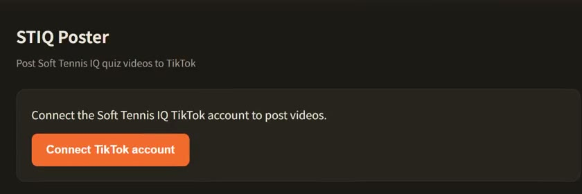
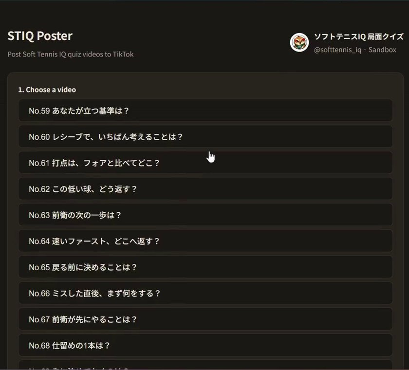
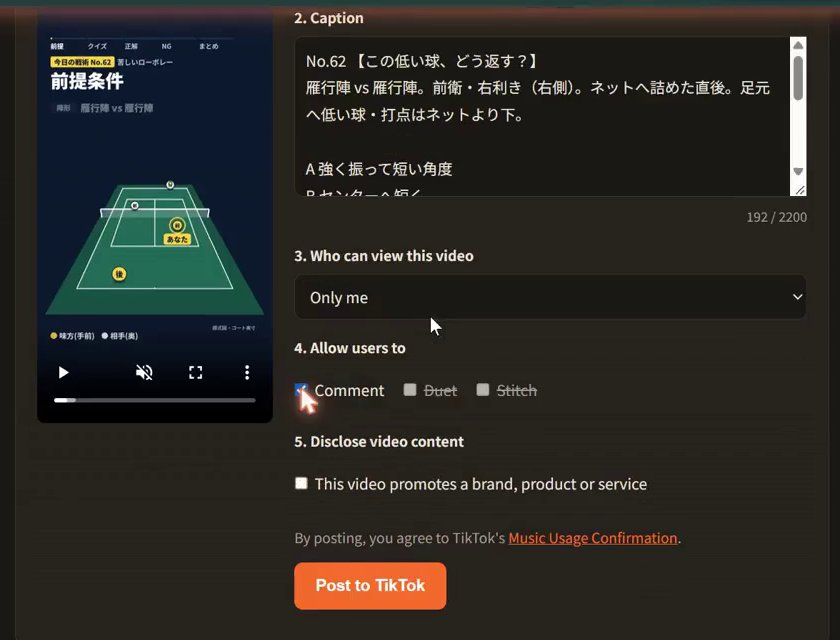

STIQ Poster
STIQ Poster is the publishing tool behind Soft Tennis IQ (@softtennis_iq), a creator who makes one-question soft tennis tactics quizzes as short vertical videos. It posts the creator's own videos to the creator's own TikTok account using TikTok Login Kit and the Content Posting API.
How it works
- Connect TikTok. The operator signs in with TikTok (Login Kit). STIQ Poster reads only the basic profile (display name and avatar) to show which account is connected.
- Choose a video. The list shows quiz videos that the operator produced and approved for publishing. Each video can be previewed before posting.
- Review the post settings. Edit the caption, choose who can view the video from the options TikTok allows for the account, choose whether comments, Duet and Stitch are allowed, and disclose branded content if needed.
- Post to TikTok. The video is uploaded with the Content Posting API (Direct Post) and STIQ Poster shows the processing status until TikTok finishes publishing.
Screens



Features
- Own content onlyPosts videos the operator created and approved. Nothing is reposted from other users.
- Creator controlsPrivacy level, comments, Duet and Stitch are chosen for every post; nothing is preselected.
- Content disclosureBranded content can be declared before posting, following TikTok's rules.
- Status trackingShows the upload and publishing status returned by TikTok.
- Local tokensAccess tokens stay on the operator's computer and are never sent to other servers.
- Easy to revokeAccess can be removed at any time from the TikTok app settings.
Who uses it
STIQ Poster is used by the operator of Soft Tennis IQ for the operator's own account. It does not read, store or post other users' content or data. See the Privacy Policy and Terms of Service.
About Soft Tennis IQ
Soft Tennis IQ publishes a daily one-question quiz about soft tennis positioning and decision-making for junior and high school players, coaches and parents. The free web app Soft Tennis IQ lets viewers review each quiz, practice the rules and plan formations.
日本語
STIQ Poster は、ソフトテニスの局面クイズ動画を配信している「ソフトテニスIQ」（@softtennis_iq）が、自分で制作・承認した動画を自分の TikTok アカウントへ投稿するためのツールです。
- TikTok でログインし、投稿する動画を選び、説明文・公開範囲・コメントなどを確認してから投稿します。
- 使うのは運営者本人のアカウントだけです。ほかのユーザーの情報やコンテンツを読み取ったり保存したりはしません。
- アクセストークンは運営者のパソコンにだけ保存します。